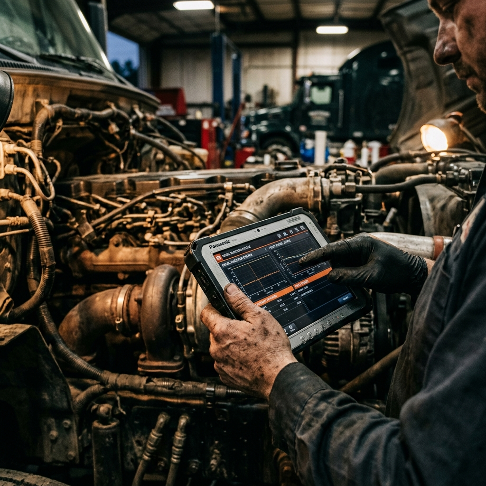

Industries We Serve
We understand that every sector has unique heavy-duty requirements. TruckFix provides customized mobile diesel repair and maintenance strategies tailored to your industry.
AVIATION GROUND
SUPPORT EQUIPMENT
When an aircraft is on the tarmac, ground support equipment (GSE) must perform flawlessly. We specialize in maintaining and repairing the diesel engines that power tugs, belt loaders, and ground power units (GPUs) right at the gate.
-
Security Cleared Personnel
Our mechanics hold necessary badges for AOA access.
-
Zero FOD Commitment
Strict adherence to Foreign Object Debris protocols during repairs.
-
24/7 Gate Dispatch
Immediate response to prevent aircraft turnaround delays.
Aircraft Tugs
Heavy pushback recovery.
GPU Units
Power generation systems.

Rapid Gate Response
Active Tarmac Units: 4

Terminal Tractors
Yard truck fleet maintenance.
Marine Generators
Dockside auxiliary power.
MARINE & PORT
OPERATIONS
Coastal ports operate in a highly corrosive, high-tempo environment. We deliver targeted diesel repair services for drayage trucks, terminal tractors, and heavy port equipment to keep global supply chains moving without interruption.
Drayage Fleet Support
Independent owner-operators and large drayage fleets rely on our fast turnaround to maximize their port turns per day. We fix chassis issues, air lines, and engine faults directly at the container yard.
Oil & Gas
Operations
Frac fleets, drilling rigs, and pipeline construction crews push diesel engines to their absolute limits. We deploy heavy-duty field mechanics to the most remote well pads to prevent catastrophic downtime.
Well Service Fleets
Coil tubing units, wireline trucks, and pump jacks require specialized diagnostic equipment. We service twin-engine setups and massive Allison transmissions in the field.
- Frac Pump Engines
- Nitrogen Pump Trucks
- Power Swivels
Heavy Haul & Rig Moves
When it's time to move the rig, trucks cannot break down. We perform pre-move inspections and trail rig convoys to provide immediate roadside repair for bed trucks and gin poles.
- Winch Truck Repair
- Heavy Suspension
- Drivetrain Overhauls
Pipeline Construction
Sidebooms, dozers, and trenchers operating in extreme dust and mud. We handle complete undercarriage work, hydraulic pump rebuilding, and field welding.
- Track & Undercarriage
- Hydraulic Cylinders
- Generator Set Service
Emergency
Response Fleets
Ambulances, fire apparatus, and rescue vehicles must start every single time. Lives depend on it. We offer priority zero-downtime maintenance programs specifically designed for EMS and fire departments.
Ambulance Chassis
Electrical systems, dual alternators, and air ride suspensions.
Fire Apparatus
Water pump PTOs, aerial hydraulics, and heavy chassis brakes.
EVT Certified
Technicians certified in Emergency Vehicle Technician standards.
NFPA Compliance
Strict adherence to preventative maintenance guidelines.
Forestry &
Logging Fleets
Deep in the woods, far from cell service and paved roads, logging equipment takes a brutal beating. We provide fully autonomous field service trucks to keep your harvest moving.

Log Trucks
Heavy-duty suspension, air scales, and extreme duty drivetrain maintenance.
Feller Bunchers
Complex hydraulic systems, saw head repairs, and cooling system blowouts.

Skidders & Loaders
Grapple cylinder repacking, articulation joint service, and winch repair.